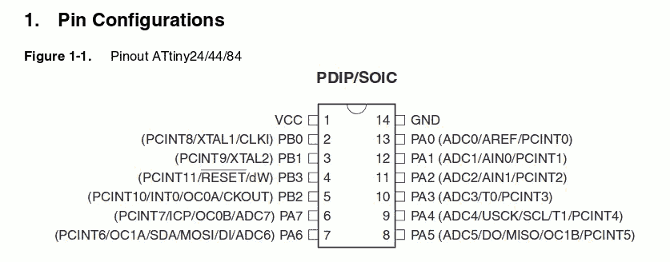

During this week we've learned about how to program the electronic board that we have produced in the previous module.
The assignment of this week module is read the microcontroller data sheet, and to program our board to do something, with as many different programming languages and programming environments as possible.
My work:
Step 1: Reading Microcontroller Datasheet
In previous module 6, we have designed the board to use the microcontroller Attiny44. Therefore, I downloaded its related datasheed and read it in order to understand well its architecture, functioning and how to connect the various Pinout. In my case, I have the version with SOIC package, so it is necessary to understand the functionalities of each Pinout and select the right Pinouts from datasheet as follow:

Therefore, now for me it was clear the reasoning behind connecting each of 6 pins of the microcontroller. Let’s take a look at the scheme of my Hello Board in order to see that for example the button is connected to PA3 and the LED to PA7:
Step 2: Preparing Pprogramming Files
I have some advanced knowledge of programming in various languages, but I have never made electronic programming. As a starting point, I downloaded a precompiled program in C in order to learn and understand how an electronic program is structured, and further check if it will work with my board.
The package I downloaded is composed of two files: the Makefile, which is used to automate the programming, and the file steadyled.c which is the program.
Before going further with programming the board, I had to modify the following two lines in order to specify to which pins the button and led are connected:
#define BUTTON_BIT PA3
#define LED_BIT PA7
steadyled.c
#include <avr/io.h>
#include <inttypes.h>
#include <util/delay.h>
void delay_ms(uint16_t ms);
void init_io();
int button_is_pressed();
void toggle_led();
#define F_CPU 20000000UL /* 20MHz crystal oscillator */
#define BUTTON_PORT PORTA /* PORTx - register for button output */
#define BUTTON_PIN PINA /* PINx - register for button input */
#define BUTTON_BIT PA3 /* bit for button input/output */
#define LED_PORT PORTA /* PORTx - register for LED output */
#define LED_BIT PA7 /* bit for button input/output */
#define LED_DDR DDRA /* LED data direction register */
#define DEBOUNCE_TIME 25 /* time to wait while "de-bouncing" button */
#define LOCK_INPUT_TIME 250 /* time to wait after a button press */
int
main (void)
{
init_io();
while (1)
{
if (button_is_pressed())
{
toggle_led();
}
}
}
void delay_ms(uint16_t ms) {
while ( ms )
{
_delay_ms(1);
ms--;
}
}
void
init_io()
{
/* set LED pin as digital output */
LED_DDR = _BV (LED_BIT);
/* led is OFF initially (set pin high) */
LED_PORT |= _BV(LED_BIT);
/* turn on internal pull-up resistor for the switch */
BUTTON_PORT |= _BV(BUTTON_BIT);
}
int
button_is_pressed()
{
/* the button is pressed when BUTTON_BIT is clear */
if (bit_is_clear(BUTTON_PIN, BUTTON_BIT))
{
delay_ms(DEBOUNCE_TIME);
if (bit_is_clear(BUTTON_PIN, BUTTON_BIT)) return 1;
}
return 0;
}
void
toggle_led()
{
LED_PORT ^= _BV(LED_BIT);
}
Step 3: Programming Hello Board
After making the necessary changes to the C program, I was ready to connect the board to the computer and upload the code. So I connected the Hello board to the FabISP using the rainbow cable through the 6 Pins, and both boards to my computer through USB ports:
Now I opened the terminal and changed command line to the directory of where my Makefile and C code are. So I executed the command "make" in order to create the execute file of the Makefile. The Makefile creates by default the hexadecimal file (steadyled.c.hex)
At the beginning, in the steadyled folder I had only two files (Makefile and steadyled.c) , now after the first command other two new files have been created by the Makefile.
After that, I have launched the command "make program-usbtiny-fuses" to reset the microcontroller and prepare it to receive the programming:
Finally I launched the command "make program-usbtiny" in order to program the Hello board:
C:\Users\Bouali\Desktop\steadyled> make program-usbtiny
avr-objcopy -O ihex steadyled.out steadyled.c.hex;\
avr-size --mcu=attiny44 --format=avr steadyled.out
AVR Memory Usage
----------------
Device: attiny44
Program: 140 bytes (3.4% Full)
(.text + .data + .bootloader)
Data: 0 bytes (0.0% Full)
(.data + .bss + .noinit)
avrdude -p t44 -P usb -c usbtiny -U flash:w:steadyled.c.hex
avrdude: AVR device initialized and ready to accept instructions
Reading | ################################################## | 100% 0.01s
avrdude: Device signature = 0x1e9207
avrdude: NOTE: "flash" memory has been specified, an erase cycle will be performed
To disable this feature, specify the -D option.
avrdude: erasing chip
avrdude: reading input file "steadyled.c.hex"
avrdude: input file steadyled.c.hex auto detected as Intel Hex
avrdude: writing flash (140 bytes):
Writing | ################################################## | 100% 0.26s
avrdude: 140 bytes of flash written
avrdude: verifying flash memory against steadyled.c.hex:
avrdude: load data flash data from input file steadyled.c.hex:
avrdude: input file steadyled.c.hex auto detected as Intel Hex
avrdude: input file steadyled.c.hex contains 140 bytes
avrdude: reading on-chip flash data:
Reading | ################################################## | 100% 0.43s
avrdude: verifying ...
avrdude: 140 bytes of flash verified
avrdude: safemode: Fuses OK (E:FF, H:DF, L:5E)
avrdude done. Thank you.
At this level, the LED should turn on by clicking on the button: this means that the board is working properly and it has been programmed successfully!
Download Zone
The Makefile and C program are available for downloand here: